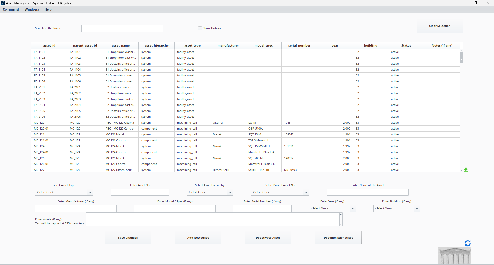
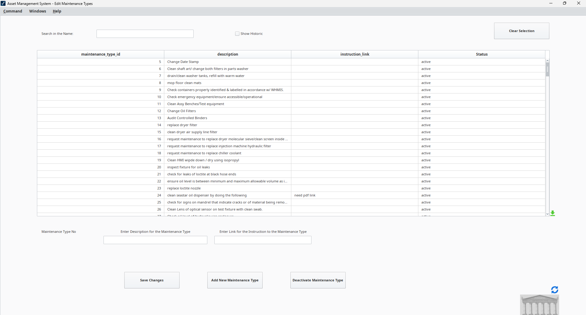
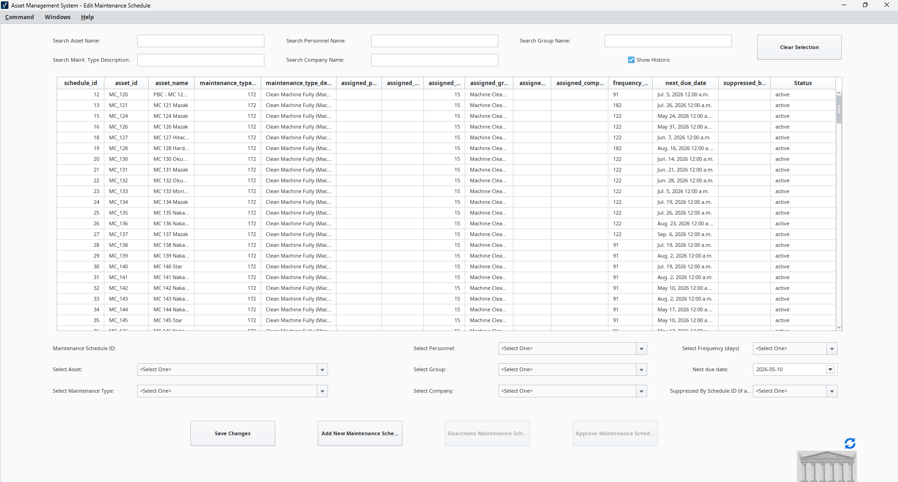
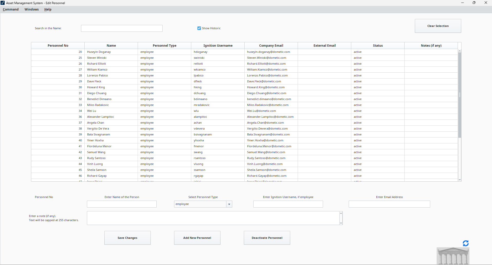
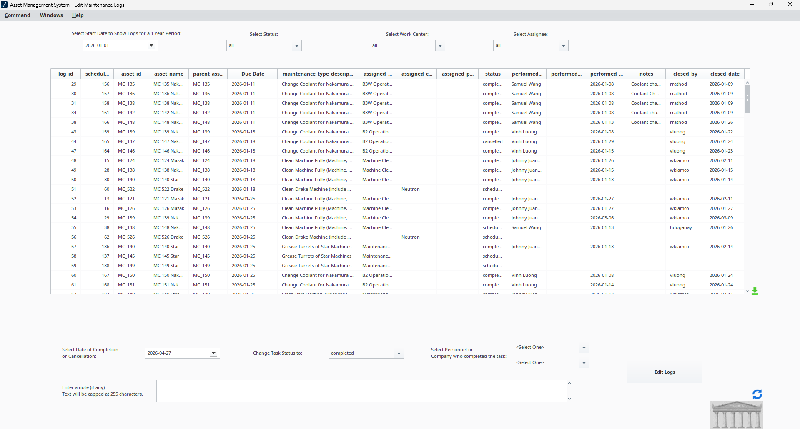
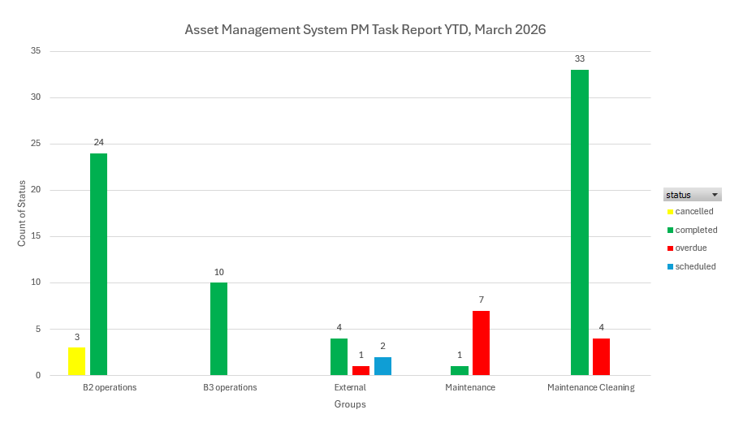
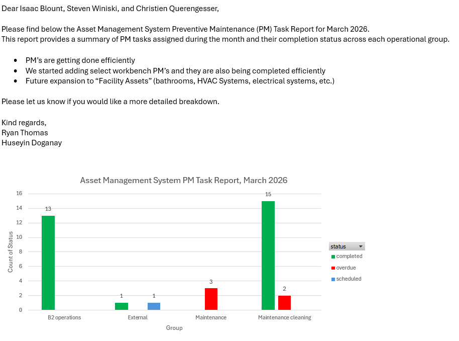
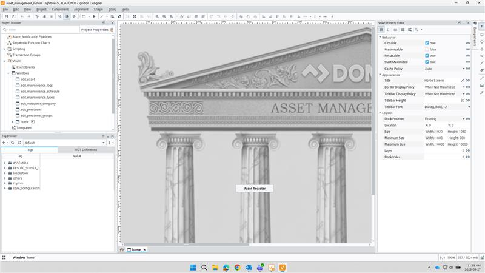
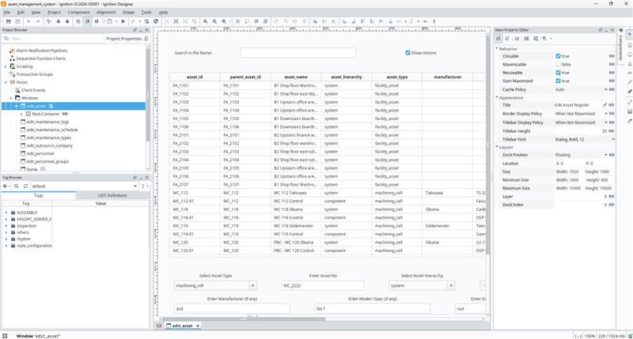

Asset Register & Tagging
Every machine and workbench across all three buildings, tagged with a unique asset ID, hierarchy, manufacturer, model, serial number, and status — after a full physical verification sweep of the facility.
Dometic · Co-Op · Sept 2025 — April 2026
A SCADA-based maintenance platform built in Ignition — replacing paper logs and scattered spreadsheets with a single, automated system for tracking assets, preventive maintenance, and the people responsible for it.

Dometic Vancouver's preventive maintenance had historically lived on paper logs and overlapping spreadsheets — no real-time visibility into when a machine was last serviced, and no way to automatically flag overdue work. Over my Fall 2025 co-op term, I helped build the data foundation for a SCADA-based Asset Management System (AMS) in Ignition: running a physical verification sweep across all three buildings to correct outdated names, numbers, and statuses, then organizing every machine and workbench into a clear work-cell hierarchy and linking each asset to its preventive maintenance (PM) tasks and frequencies.
In Spring 2026, the focus shifted to turning that foundation into a live operational tool: finalizing asset tagging, uploading and structuring the full PM dataset, and activating automated weekly scheduling — every Thursday the system dispatches maintenance tasks by email with a 14-day completion window, and personnel log completion directly back into the system. Since going live in January, the platform has sustained a preventive maintenance completion rate above 85% over rolling two-week windows, and I now generate monthly performance reports for the Director of Operations and maintenance leadership.
System Modules
Built around how maintenance actually gets planned, assigned, tracked, and reported on — plus a look at how it comes together behind the scenes in Ignition Designer.

Every machine and workbench across all three buildings, tagged with a unique asset ID, hierarchy, manufacturer, model, serial number, and status — after a full physical verification sweep of the facility.

Every preventive maintenance task — cleanings, oil changes, inspections, filter swaps — catalogued with a unique ID, written instructions, and an active/inactive status.

The automated engine behind the weekly PM dispatch: each row pairs an asset with its maintenance type, assigned personnel or group, frequency, and next due date. Every Thursday the scheduler generates that week's tasks and emails them out with a 14-day completion window.

In-house maintenance staff, personnel groups, and outsourced contractors, linked to Ignition usernames and company emails so scheduled tasks route to the right person automatically.

A permanent, searchable history of every task — who performed it, when it was completed or cancelled, and any notes — replacing paper sign-off sheets with a live digital record supervisors can audit at any time.

Exported system data rolled up into year-to-date completion charts by operational group — completed, overdue, cancelled, and scheduled — giving leadership a clear read on where maintenance is on track and where it's falling behind.

Monthly PM performance summaries, compiled into charts and sent directly to the Director of Operations, Operations Manager, and Maintenance Manager — turning raw completion data into a decision-ready update each month.
There's no screen to show for this one — it was walking every building, floor by floor, to find, organize, and structure the reference documents and manuals tied to each asset.
High-priority machines flagged for closer monitoring and tighter maintenance intervals.

Every screen in the AMS — asset register, maintenance types, schedule, logs, personnel, groups, outsource companies — is its own Vision window, built and wired up in Ignition Designer under one shared project.

Each window's components, tag bindings, and behavior — sizing, dock policy, resizability — configured individually so every screen looks and works consistently across the system.
Full Write-Ups
The two technical reports I submitted to SFU covering this project in detail, from the initial data foundation to full operational deployment.